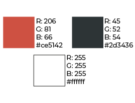

MICROSITIO
IDENTIDAD
TIPOGRAFIA
Para la página web se trabajó con la misma tipografía escogida para el isologo: Montserrat. Se utilizó en sus variables regular, bold y thin segun las necesidades y las jerarquías presentes en las diferentes secciones.

PALETA CROMÁTICA
La paleta cromática del sitio se compone unicamente de tres colores para mantener un diseño limpio. El rojo que se utiliza es el mismo del isologo para mantener la presencia de china en la web.
